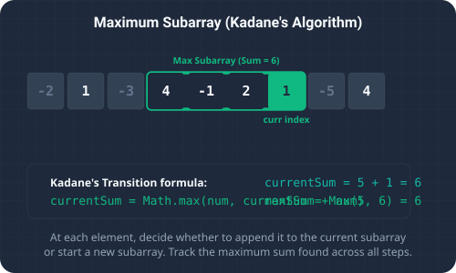

What We're Solving & Sequential Sums
Determining the maximum sum of a contiguous subarray in a one-dimensional array is a classic problem in computational logic. The Maximum Subarray problem asks us to find a contiguous segment of elements within a numeric array (which may contain both positive and negative values) that yields the largest possible sum.
For example, in the array [-2, 1, -3, 4, -1, 2, 1, -5, 4], the contiguous subarray with the largest sum is [4, -1, 2, 1], which sums up to 6.
This is a key algorithm in software engineering:
- Financial Analytics: Finding the optimal time frame to buy and hold a stock by locating the period of greatest consecutive net gains.
- Signal Processing: Detecting the strongest contiguous signal burst amidst background noise and interference spikes.
- Pattern Recognition: Identifying clustered high-density regions within geometric or sequential data arrays.

To visualize this selection strategy, imagine riding a rollercoaster with positive peaks (happiness) and negative drops (discomfort or boredom):
- Tracking the Streak: You want to find the single continuous segment of the ride that gives you the highest total happiness. As you traverse the track, you keep a running sum of your happiness.
- Resetting: If at any point your running sum drops below zero, it means the journey up to this block is actually dragging you down. Keeping this history would make any future streak smaller. So, you dynamically discard the negative history, reset your running streak to zero, and begin tracking a new segment starting exactly at the next track section.
- Recording the Peak: Throughout the entire ride, you note down the highest happiness score your streak ever reached. That peak score is the maximum subarray sum.
Solving the Problem
1. The Naive Scanning Method (O(n²) Complexity)
A naive approach checks every possible starting and ending index combination, summing the values within each range to find the maximum. This requires two nested loops, giving a time complexity of O(n²). For arrays with thousands of elements, this approach is extremely slow and unusable.
2. Kadane's Algorithm (O(n) Time, O(1) Space)
Kadane's algorithm is an elegant dynamic programming technique that solves this problem in a single pass. At each element, we make a local greedy choice: Is it better to append the current element to our existing running sum, or should we discard the previous sum and start a brand-new subarray starting exactly at the current element?
By evaluating Math.max(nums[i], currSum + nums[i]) at each step, we dynamically build the optimal subarray sum in O(n) time using only O(1) extra space.
Detailed Trace Walkthrough
Let's trace Kadane's algorithm step-by-step on the input array nums = [-2, 1, -3, 4, -1, 2, 1, -5, 4]:
- Step 1 (Initialization): We set our running variables to the first element:
currSum = -2maxSum = -2
- Step 2 (Index i = 1, Value = 1):
- We evaluate:
Math.max(1, currSum + 1) = Math.max(1, -2 + 1) = 1. currSumbecomes1(we discard the negative history and start a new subarray here).- Update global maximum:
maxSum = Math.max(-2, 1) = 1.
- We evaluate:
- Step 3 (Index i = 2, Value = -3):
- Evaluate:
Math.max(-3, 1 - 3) = -2. currSumbecomes-2(we append the element because extending is better than starting a new subarray at-3).maxSumremains1.
- Evaluate:
- Step 4 (Index i = 3, Value = 4):
- Evaluate:
Math.max(4, -2 + 4) = 4. currSumbecomes4(we discard the negative history and start a new subarray here).- Update global maximum:
maxSum = Math.max(1, 4) = 4.
- Evaluate:
- Step 5 (Index i = 4, Value = -1):
- Evaluate:
Math.max(-1, 4 - 1) = 3. So,currSum = 3. maxSumremains4.
- Evaluate:
- Step 6 (Index i = 5, Value = 2):
- Evaluate:
Math.max(2, 3 + 2) = 5. So,currSum = 5. - Update global maximum:
maxSum = Math.max(4, 5) = 5.
- Evaluate:
- Step 7 (Index i = 6, Value = 1):
- Evaluate:
Math.max(1, 5 + 1) = 6. So,currSum = 6. - Update global maximum:
maxSum = Math.max(5, 6) = 6.
- Evaluate:
- Step 8 (Index i = 7, Value = -5):
- Evaluate:
Math.max(-5, 6 - 5) = 1. So,currSum = 1. maxSumremains6.
- Evaluate:
- Step 9 (Index i = 8, Value = 4):
- Evaluate:
Math.max(4, 1 + 4) = 5. So,currSum = 5. maxSumremains6.
- Evaluate:
- Step 10 (Completion): The loop finishes, and the maximum subarray sum recorded is
6(corresponding to[4, -1, 2, 1]).
Code Highlights & Explanations
The key highlights of our Java implementation:
currSum = Math.max(nums[i], currSum + nums[i])is the core state transition. It determines whether the current element should extend the previous subarray or start a new one.maxSum = Math.max(maxSum, currSum)ensures we record the peak running sum seen at any point during the single-pass traversal.
Full Code Solution
Below is the complete, self-contained Java source code that solves this problem using both naive search and the optimized Kadane's algorithm, along with console logging.
package io.practise.dsa;
import java.util.Arrays;
public class MaximumSubarray {
// Brute Force - O(n^2)
public int maxSubArrayBrute(int[] nums) {
int max = Integer.MIN_VALUE;
for (int i = 0; i < nums.length; i++) {
int sum = 0;
for (int j = i; j < nums.length; j++) {
sum += nums[j];
max = Math.max(max, sum);
}
}
return max;
}
// Optimized - O(n) (Kadane's Algorithm)
public int maxSubArray(int[] nums) {
int maxSum = nums[0], currSum = nums[0];
for (int i = 1; i < nums.length; i++) {
currSum = Math.max(nums[i], currSum + nums[i]);
maxSum = Math.max(maxSum, currSum);
}
return maxSum;
}
public static void main(String[] args) {
MaximumSubarray solver = new MaximumSubarray();
int[] nums = {-2, 1, -3, 4, -1, 2, 1, -5, 4};
System.out.println("--- Maximum Subarray (Kadane's) Demonstration ---");
System.out.println("Input Array: " + Arrays.toString(nums));
System.out.println("\nExecuting Kadane's Algorithm...");
int maxSum = nums[0], currSum = nums[0];
System.out.printf("Initial state: currSum = %d, maxSum = %d\n", currSum, maxSum);
for (int i = 1; i < nums.length; i++) {
currSum = Math.max(nums[i], currSum + nums[i]);
maxSum = Math.max(maxSum, currSum);
System.out.printf("After element %d (val=%d): currSum = %d, maxSum = %d\n",
i, nums[i], currSum, maxSum);
}
System.out.println("Maximum contiguous subarray sum: " + solver.maxSubArray(nums));
}
}Conclusion & Takeaways
Solving the Maximum Subarray problem using Kadane's Algorithm highlights the power of dynamic programming to reduce time complexity. By making localized greedy choices and resetting negative subproblems, we convert an $O(n^2)$ search into a clean $O(n)$ single-pass solution.